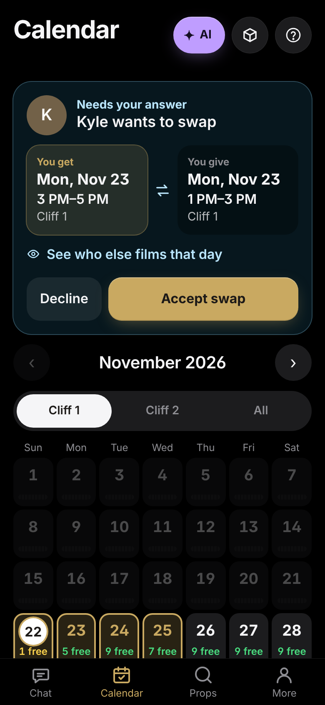
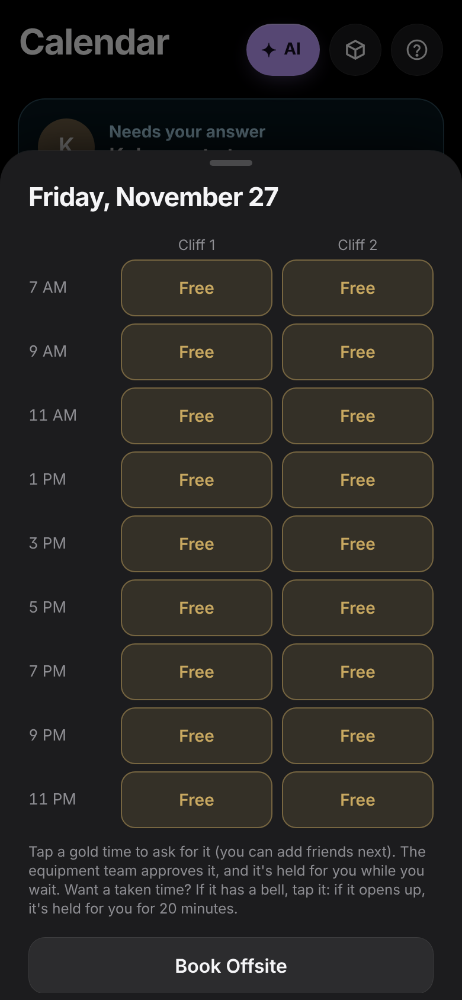
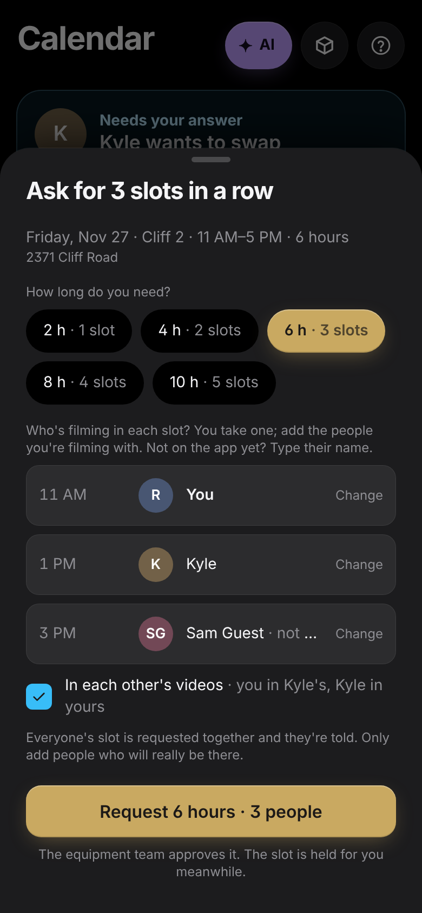
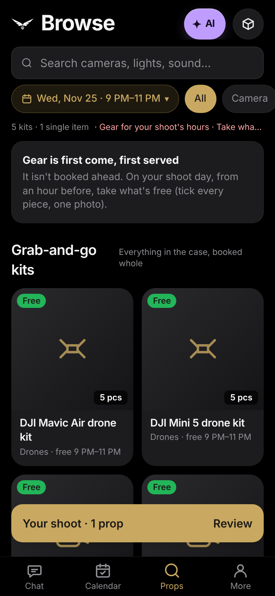
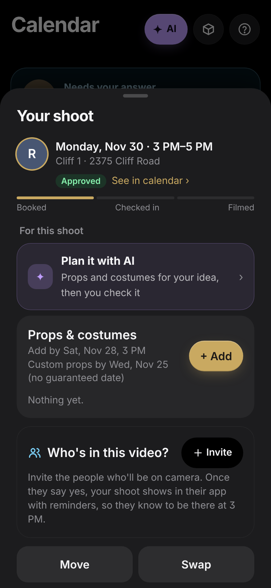

Book your filming time
Open proptracker.arbcreative.co in Safari or Chrome, then Share → Add to Home Screen. Open it from that icon from now on.

1Tap CalendarGreen numbers = free slots that day. Pick Cliff 1, Cliff 2 or All.

2Tap a day, then a gold timeEach slot is 2 hours. Shooting somewhere else? Tap Book Offsite.

3Pick hours and who's filmingNeed longer? Pick 4 h or 6 h and put a name in each slot. Then tap Request.
Wait for “Approved”. Your time is held for you while the team checks it. You get a notification when it's approved.
Faster: type it in the Chat tab. Thursday at Cliff 1 at 5pm with Kyle
Get your props and gear
 1Tap Props, search
1Tap Props, searchType what you need, like “cop” or “candles”. Tap + on a photo to add it to your shoot.
 2Review and send
2Review and sendType your video name, then tap Send the props. The arts team packs it.

3Gear: take it on the dayGear isn't booked ahead. On your shoot day, tap Take gear in the chat, tick every piece, take a photo.
Ask for props at least 48 hours before your shoot starts.
Something we don't have? Ask 4 open days ahead, then talk to the arts team on Slack. No guaranteed date.
Forgot something? Open the request and tap Change while it says Requested.
Gear back late? A late fee of 10% of its value can apply. Bring it back when your shoot ends.
No idea what to use? Tell the chat your video idea. a haunted séance video
It suggests props from our closet.
On shoot day
 1Check in with a selfie
1Check in with a selfieIt opens 15 minutes before your time. Tap Check in, take a selfie. Left a mess or ran late? Tell us there.

2Film, then wrapWhen you're done, type what you filmed. That's your proof you showed up.
 3Bring it all back
3Bring it all backTap Return everything, tick what's back, take one photo, send. Broken? Say so there.
Moving or cancelling is free with 48 hours notice.
Cancel later or don't show up = a strike. 2 strikes in 30 days pauses prop requests for 14 days.
Missed your check-in? You have 12 hours to explain in the app.
Cliff 1 on Thursday and Saturday is for priority creators. Others need a filming guideline.
Stuck? Ask the chat. how do I cancel?
is my shoot approved?
I broke the tripod